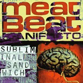

Highlights:
"She's Unreal"



To those familiar with Aldous Huxley's novel Brave New World, this would be a very fitting soundtrack. The theme of an eerie sterile futuristic world runs through the entire album, planting subliminal ideas into the listener's mind. For example, "1979" features a distorted growl 'stuck in nineteen seventy-nine' that calls upon the image of an unfortunately curious creature caught in a time loop, while "She's Unreal" calls upon the scene in a sci-fi movie where a man discovers his flawlessly beautiful woman is an android with evil robot motives. Disc one's disturbing tones will leave the listener shaken up and fatigued from sitting up too straight. Disc two still carries the same themes, but in a more subtle way. The result: paranoia, strange stirrings of the imagination, and the desire to go back for more.
Highlights:
"She's Unreal"